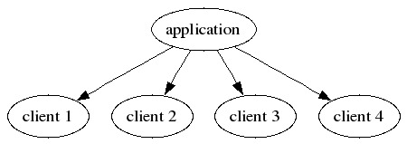
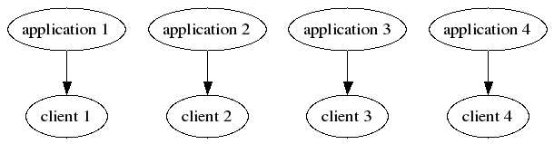

All about web programming (except programming)
| Author: |
Ian Bicking |
|---|
| company: | Imaginary Landscape |
|---|
Or, Programmer v. Sysadmin: Fight!
what I'm gonna talk about
Web development process:
- Project layout
- What an application should look like from the outside
- Deployment
- Not programming
the eternal battle
System administrator
VS
Application programmer
the eternal battle
Fight!
VS
the eternal battle
| Programmer |
Sysadmin |
|---|
| Get it running |
Keep it running |
| Receive praise |
Avoid blame |
| Emacs |
vi |
| Working code |
Documentation |
| Self-documenting code |
Why do I care about your code? |
| Write new stuff |
Maintain old stuff |
like in the movies
Then I realized... the man I was battling was...
da-da-dum!
MYSELF
so what this will be about
Apparently I am going to talk about:
- Accepting my inner sysadmin
- The soul-searching process of dealing with deployment
- ... when I really would rather be writing code
who I am
Imaginary Landscape:
- Small web development company
- 2 to 2-1/2 programmers
- 0 to 1 system administrators
- Vague division of roles
why that is good
Ian
-v-
Ian
Q: Who will prevail?
why that is good
(please ignore Ian's inevitable loss)
my two hats
- Ian the programmer likes to write new things
- Ian the sysadmin would rather redeploy well-understood software
- Ian the programmer likes to make frameworks to handle tricky
situations
- Ian the sysadmin likes to hook things together using reliable
intermediaries (files, databases)
my two hats
- Ian the programmer likes to work on his own machine
- Ian the sysadmin likes consistent environments
- Ian the programmer wants access to all the newest libraries
- Ian the sysadmin wants to use a stable set of software
organizations
Conway's law:
Organizations which design systems are constrained to produce
designs which are copies of the communication structures of these
organizations.
how we got here
- Zope 2 through-the-web development
- Ad hoc Z SQL, DTML
- No formal process
- Not even an informal process
where we try to improve ourselves
- Moved out of Zope into Webware
- Moved into Subversion
- But kind of half-heartedly: never really said this is the way it
will be
- Things moved from prototype to live without quite meaning it
- Ian the sysadmin was being a slacker
need to do more than just start
- Deployment was hard and confusing
- Hand testing; but testing didn't lead to confidence
- Going live was stressful
- Asking the same questions about development and deployment over and
over
- (Ian the programmer and Ian the sysadmin sometimes work together to
ignore Ian the project manager)
let's just not deploy...
Deployment was hard and stressful for everyone

So we thought we just wouldn't deploy
Started making applications that were "multi-client"
One install and many clients
well that was all wrong...
- Instead of developing good tools, we were building all the
complexities into our applications
- Applications are hard, tools are easy
- Dumb, dumb, dumb (but I only realize that now -- it seemed
obviously more smart at the time)
the problems...
- Everyone gets the same software and features
- Configuration was going into database
- Databases are not very agile
- Subversion doesn't hold databases
now what we do
Deployment should be easy

Easy deployment is obviously good, not just smart
Once deployment is easy, multi-client installs are superfluous
the result
What does it look like?
Start a new project:
paster create --template=iscape \
--svn-repository=http://our-repository \
NewApp
Now we have:
- Standard Subversion layout (NewApp/trunk/, branches/, tags/)
- setup.py file; ready to build a package
- newapp.db; model, empty initialization routing
- Basic framework layout, templates, internally-used metadata
- Working functional test
- Working (and minimal!) configuration file
testing
This is what our tests start out like:
from fixture import *
def test_root():
app.get('/')
- Any functional test is a good functional test
- Sometimes the best functional tests are just exercise
test-driven development
Test driven development:
- Read the spec given to me, write a complete test
- Never open a browser until I think I'm done with the app
- Too extreme
configuration
Configuration surprising central to deployment design
Starts out like:
[app:devel]
use = egg:NewProj
database = postgres://pgsql@/testproj
debug = true
No mention of framework, internal layout
Also create a configuration file template, self-documenting fresh
file for new installs
vc layout
- Only the testing/development configuration goes in application
repository
- Client data is kept in client repositories, not in app
- No conf/ directory in app
- (We use Subversion+SSH (svn+ssh://...) which works poorly)
then we code
The next step is writing the application...
This presentation is not about programming
then we deploy
The deployment process looks like:
$ paster setup.py svntag --version=1.1 --next-version=1.1.1
$ cd ../NewProj-1.1/
$ python setup.py iscape_dist
- svntag is part of the buildutils project
- tagging by hand while managing distutils metadata was too hard for
me
- iscape_dist is an internal distutils/setuptools extension;
packages and uploads
then we install
Installation:
paster deploy NewProj
- Invokes easy_install NewProj
- Writes new configuration from template file
- Uses all of our internal conventions
- Mounts application to path
installation steps
One step process isn't granular enough
Database setup and other steps not interactive enough
We're moving towards:
paster make-config --edit NewProj
paster setup-app config_file.ini
Programmers and sysadmins agree: the best interactive UI is the text
editor
other problems
- Installing from tarballs isn't a good idea
- Installing from Subversion is a good idea
- Even on live site -- development sometimes moves from live to devel
(Ian the sysadmin bites his tongue)
- python setup.py develop activates a checkout (instead of
copying files)
versioned installation
We first used setuptools' ability to install multiple versions of a
package
Everyplace we used a package, we allowed a version specification:
use = egg:FormCatcher==0.1
This worked fine on first project (of course)
Fell apart about 30 minutes into second project on same machine
versions
- This allows for accidental upgrading, because we didn't put in
explicit version numbers
- Accidental upgrades are bad
- Complicated to decide how any one installation would effect the
entire system
- Maintaining requirements too hard; changing requirements on
installed software not feasible
Python setup
- A lot of struggling to handle versions, requirements, isolation
- We are still struggling
- The very idea of global installation now seems dumb to me
- Global installation is an adaptation to compensate for a poor
package installation process
- The box is not a useful scope for installation
Python setup
- Programmer and sysadmin agree: site-packages is dangerous
- It's bad for production situations
- It's bad for serious programmers
- It's bad for development situations
- It's bad for shared hosts
- It's bad for Python newbies
isolating environments
Each site gets its own Python environment
You set the site by setting $ACTIVE_SITE (lots of unintended
conveniences)
In sitecustomize.py:
if os.environ.get('ACTIVE_SITE'):
site.addsitedir('/iscape/web/%s/lib/python2.4'
% os.environ['ACTIVE_SITE'])
else:
site.addsitedir('/iscape/lib/python2.4')
isolating distutils
- lib/python2.4/distutils/distutils.cfg can control global
installation options
- Using it, easy_install works right by default (with no
command-line options)
disutils.cfg
Sample distutils.cfg:
[install]
prefix = /iscape/web/SITE
[easy_install]
install_dir = /iscape/web/SITE/lib/python2.4/
site_dirs = /iscape/web/SITE/lib/python2.4/
script_dir = /iscape/web/SITE/bin/
find_links = http://internal-repository
zip_ok = false
isolation problems
- distutils.cfg can't read $ACTIVE_SITE; not that flexible,
needs to be monkeypatched to work
- Should be controllable by Python code (like sitecustomize), not
configuration file
- Maybe I just need to be more creative with setuptools
- Not enough logging